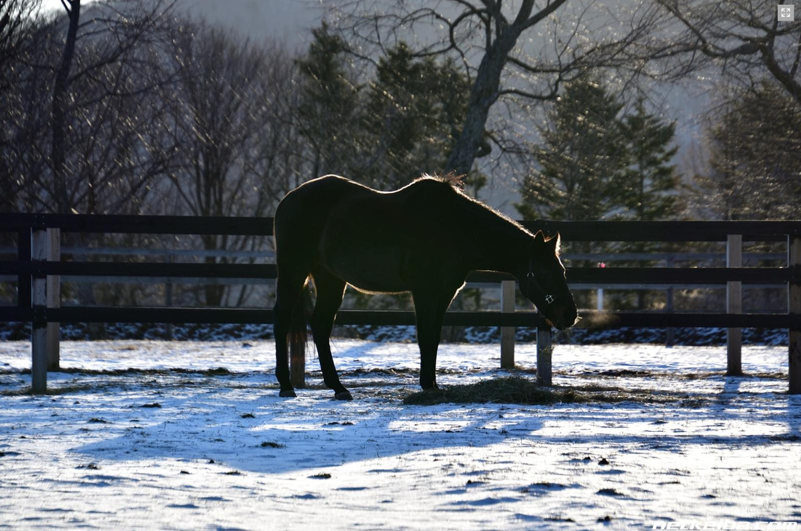
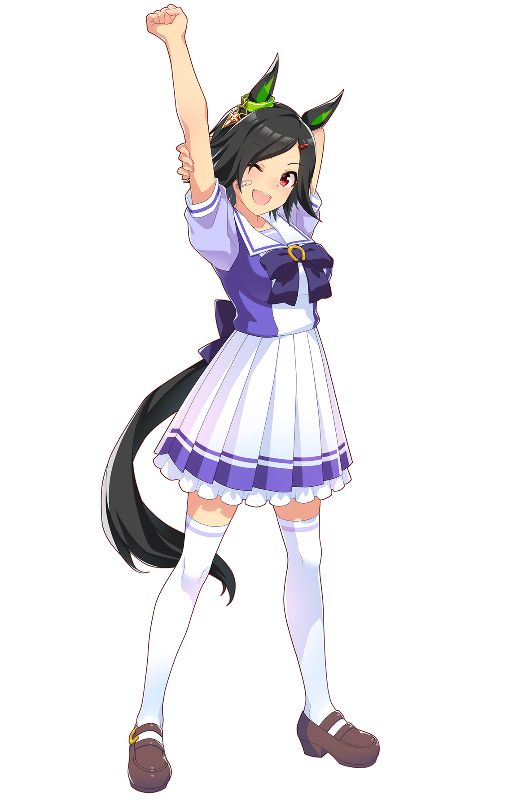
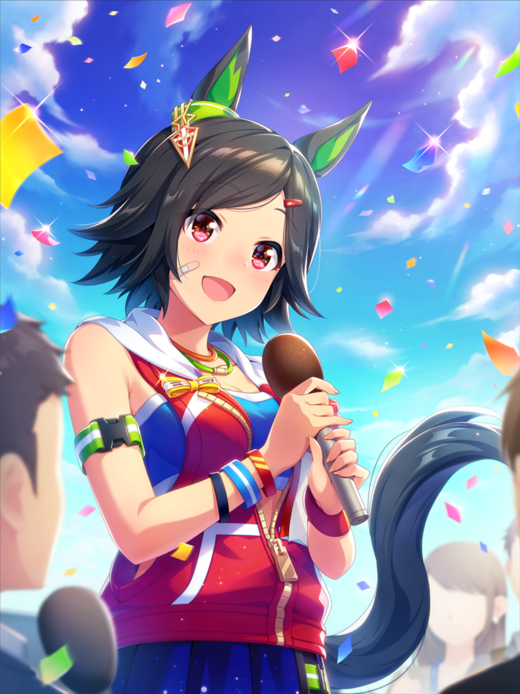
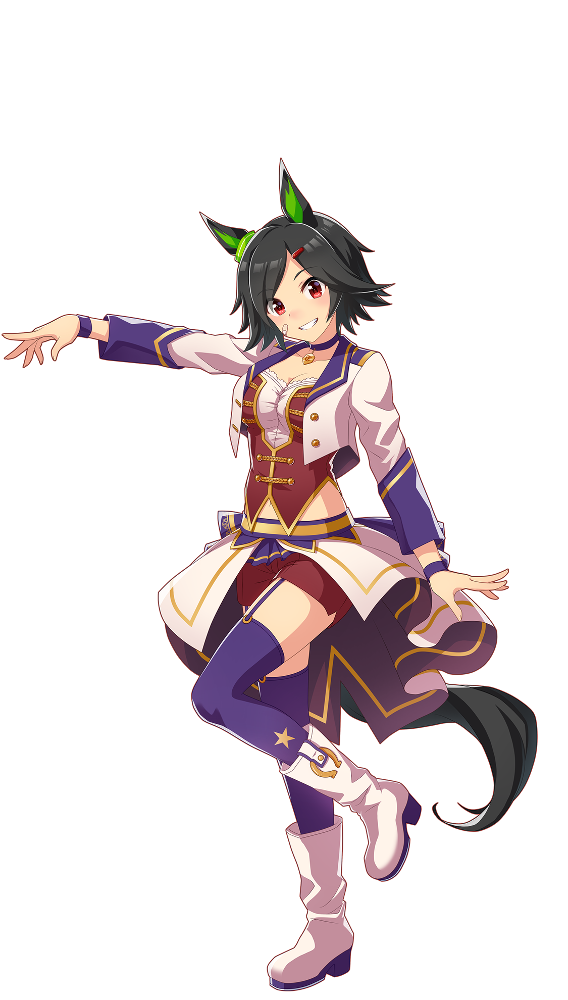

Winning Ticket (1990-2023) was a Japanese racehorse best known for winning the 1993 Tokyo Yushun (Japanese Derby).You may be more familiar with the horse's portrayal in the Uma Musume multimedia franchise ↓

Yes! Here comes the moment that we've been dreaming of!
Full speed ahead, Won't wait for anyone!

Don't blink, don't miss a second, This is gonna be the day!
Everybody says that this our time, It doesn't feel real

But it's not over yet!
We'll keep moving on
All those tears are for tomorrow's sake!